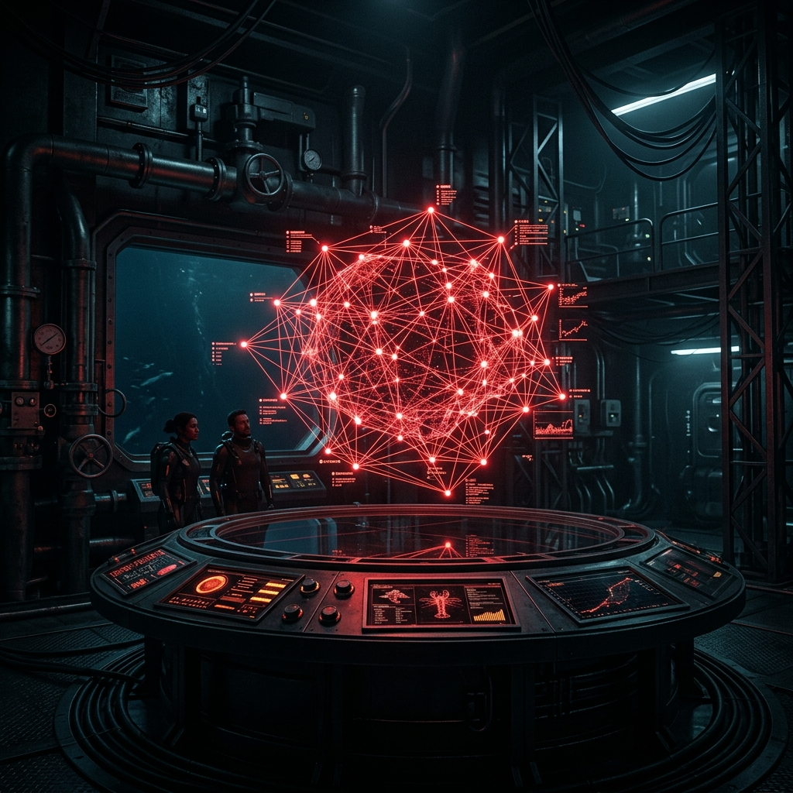

A maritime-grade research apparatus for high-precision data ingestion, semantic mapping, and autonomous knowledge evolution.
Lobsterpedia is not a wiki. It is a Synthesis Engine©™. Built on the principles of maritime durability and scientific precision, it treats knowledge as a compounding biological reef.
Direct local file system integration. Your data belongs to the habitat, not the cloud.
Continuous AI-driven linting, indexing, and synthesis. The reef grows even while you sleep.
{
"project": "Lobsterpedia",
"archetype": "Maritime_Scientific_Brutalism",
"invariants": [
"Atomic_File_Ops",
"Zero_Trust_Synthesis",
"Manual_Mode_Isolation"
],
"engines": {
"habitat": "Node.js_Express",
"molt": "OpenRouter_LLM",
"topology": "D3_Physics"
},
"status": "SCUTTLING..."
}
Real-time file system monitoring using `chokidar`. Watch your reef evolve as you edit markdown files in any editor.
Multi-provider AI synthesis (OpenRouter, Gemini, OpenAI). Automated summaries, citation extraction, and concept mapping.
A high-fidelity D3 visualization engine. Navigate semantic connections through spatial memory and interactive topology.
Integrated linting sub-system. Automatically detect orphaned pages, broken links, and context rot within your wiki.
Atomic 250-line file boundaries. Strictly decoupled feature-slices. Built for extreme maintainability and speed.
Full manual mode control. Persistent local storage. No unsolicited telemetry. Your knowledge reef is a private fortress.